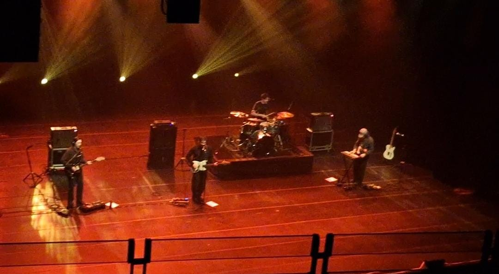
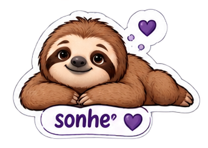
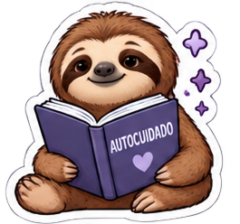

O nome
O nome Slowi vem da palavra "Slow" que, traduzido do inglês, significa devagar. Sendo uma referência ao processo de cura, que mesmo lento, é um grande avanço.
Pequena apresentação
Sou alguém que curte bastante tecnologia, astronomia e jogos. Sempre gostei de criar coisas e esse projeto é uma reflexão deste meu lado mais criativo!
Sou estudante de Análise e Desenvolvimento de Sistemas e esse projeto faz parte da minha jornada pelo curso, como um projeto que define uma parte de mim, uma parte mais emocional...
Conhecendo melhor
Fui uma criança alegre, que adorava brincar, era risonho e feliz. Entretanto, esse brilho foi se perdendo com o tempo. Passei por situações traumatizantes, como bullying, injustiças e desilusões amorosas. Com aproximadamente 12 anos, apresentei sinais de depressão. Tenho feito tratamento e percebi que existe uma vontade em mim de evitar que mais pessoas passam por esse sofrimento.
É aí que entra o Slowi. Muitos colegas me perguntaram o motivo de eu escolher um tema mais complicado de se lidar em um projeto. Mas ele surge como uma vontade de ajudar ao próximo por meio da tecnologia. Eu sei que ele não tem poder de salvar vida, pois o Slowi é um blog pessoal de minha autoria, entretanto, gosto de trabalhar com causas que sejam mais do que apenas tecnologia.
Hei de vencer
— Alejandro Osuna Ubeda
Memórias
Alguns momentos que me fizeram mais feliz :)

Origem
Veja como o nome, o mascote e a proposta nasceram.


O nome Slowi vem da palavra "Slow" que, traduzido do inglês, significa devagar. Sendo uma referência ao processo de cura, que mesmo lento, é um grande avanço.
Como melhor mascote para o projeto, temos o Slowi, um bicho-preguiça simpático que anda em seu próprio ritmo, percorrendo distâncias que ele nem imagivana ser capaz.
O Slowi é um blog pessoal e não garante cura a casos mais sensíveis, servindo como um auxílio àqueles que queiram cuidar de sua saúde mental.
Agradecimentos
Veja as pessoas que me trouxeram até aqui e sempre estiveram aqui por mim.
[O que você aprendeu fazendo as telas, o menu e os gráficos.]
[O que você aprendeu com o servidor, as rotas e o MySQL.]
[O que você aprendeu sobre senhas com hash e validação no servidor.]
[O que você aprendeu sobre escrever e desenhar para quem está sensível.]
Lembrete
[Adicionar um recado curto e sincero para quem está lendo.]